Graphic design is something I love getting my hands dirty in. The process of solving a communication issue through type, space, and imagery is a great challenge.
Here are some of my favorite pieces I've created over the years and some background on each one.
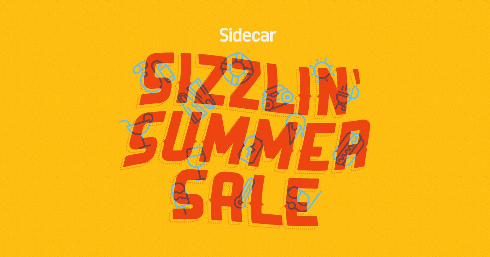

 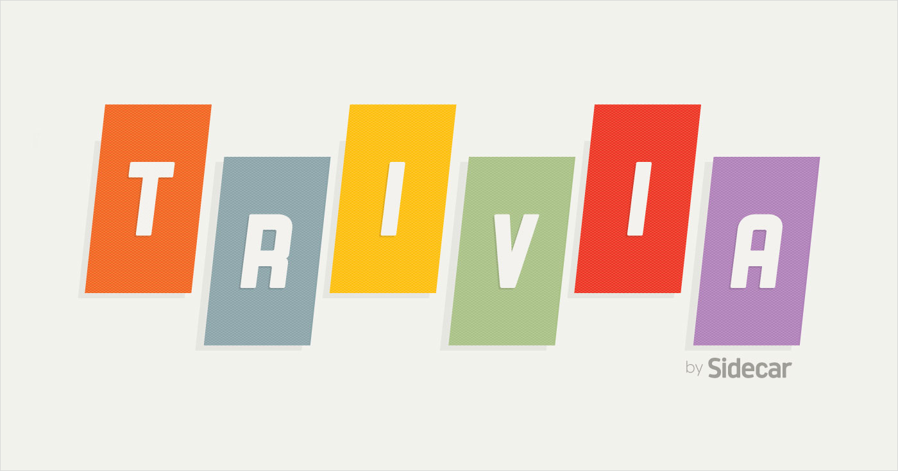
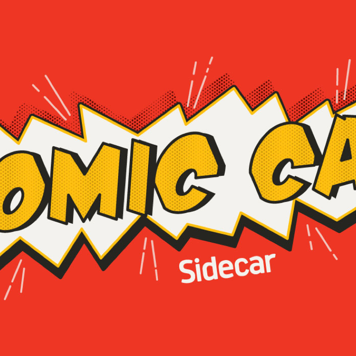
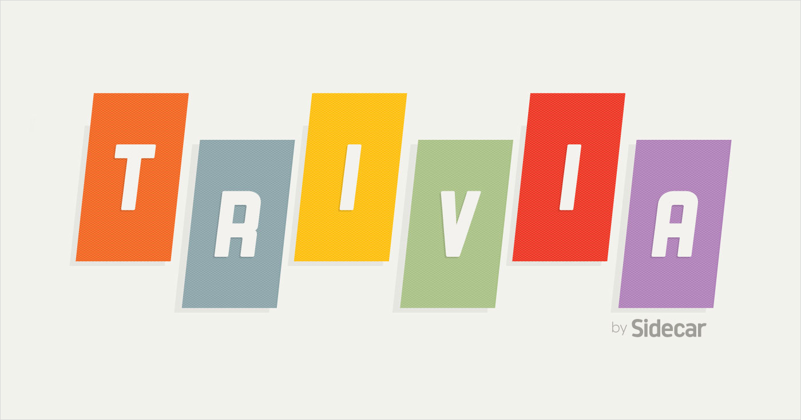
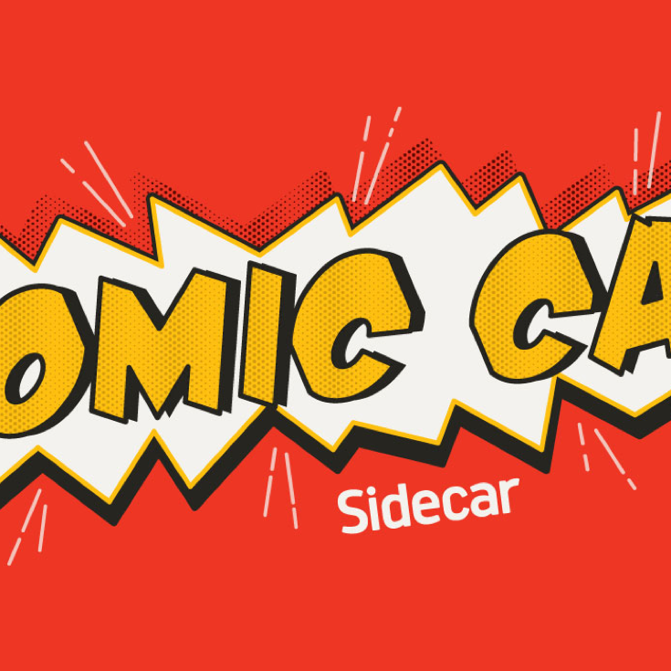
 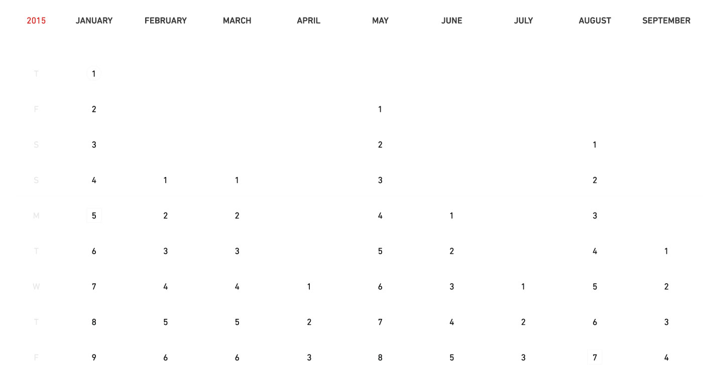
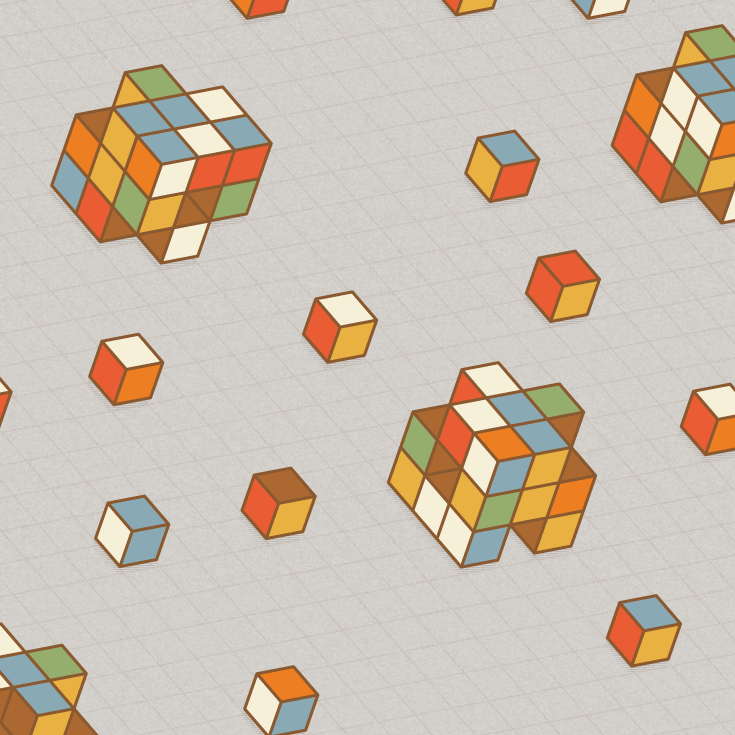
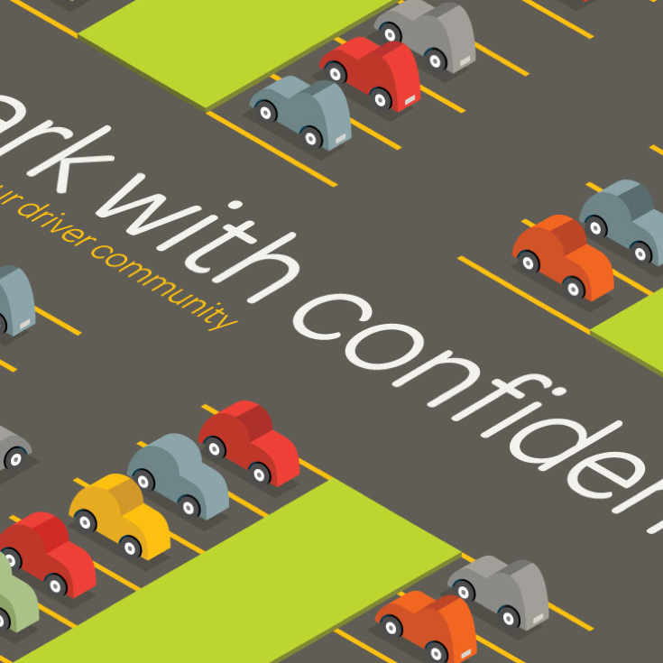
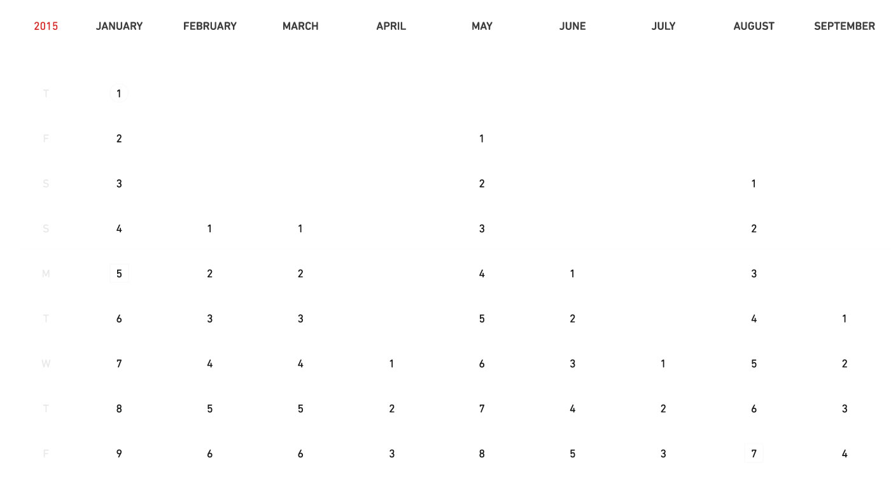
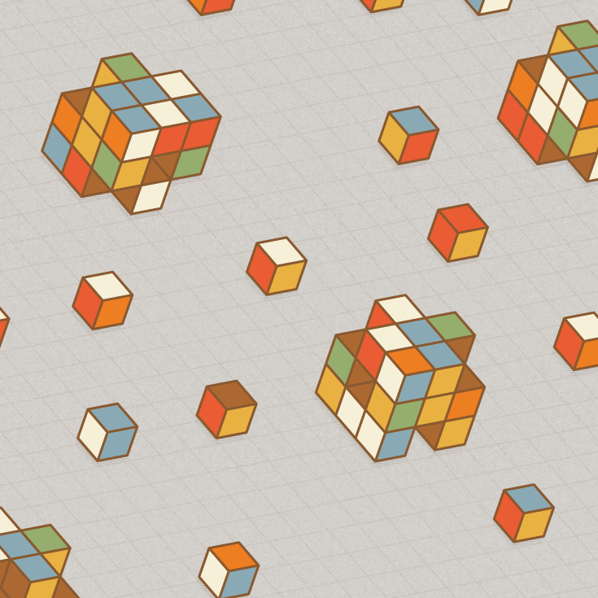
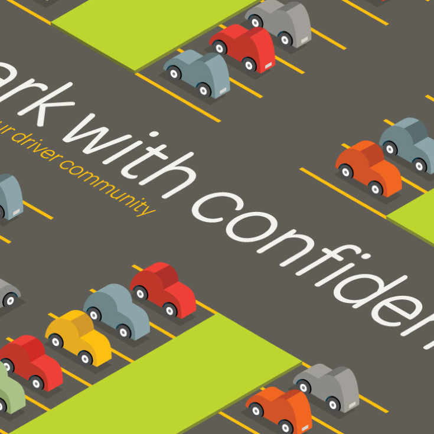